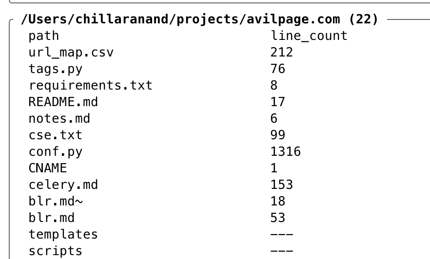

Add "Line Count" Column in File Manager
While monitoring an ETL pipeline, I browse a lot of files and often need to know how many lines are there in a file. For that, I can switch to that directory from terminal and run wc -l for that.
To avoid the hassle of switching to the directory and running a command in the terminal, I wrote a simple lua script to show line count column in xplr1 file manager.
Failed Attempts
Initially I set out to write a Finder2 plugin to show the line count column. But I couldn't find a way to get the line count of a file in Finder plugin. I have explored other GUI file managers but none of them have a way to show custom columns with line count.
Finally, I stumbled upon xplr a TUI file manager, and it was a breeze to write a lua script to show the line count column.
xplr - line count
xplr can be installed via brew.
$ brew install xplr
$ xplr --version
xplr 0.21.3
xplr reads the default configuration from ~/.config/xplr/init.lua. The following configuration shows the line count column in xplr.
version = '0.21.3' xplr.fn.custom.fmt_simple_column = function(m) return m.prefix .. m.relative_path .. m.suffix end xplr.fn.custom.row_count = function(app) if not app.is_file then return "---" end local file = io.open(app.absolute_path, "r") if file then local row_count = 0 for _ in file:lines() do row_count = row_count + 1 end file:close() return tostring(row_count) end end xplr.config.general.table.header.cols = { { format = " path" }, { format = "line_count" }, } xplr.config.general.table.row.cols = { { format = "custom.fmt_simple_column" }, { format = "custom.row_count" }, } xplr.config.general.table.col_widths = { { Percentage = 30 }, { Percentage = 20 }, }
This will show a row count on launch.

Conclusion
xplr is a very powerful file manager, and it is very easy to write lua scripts to create custom columns. I couldn't find a way to sort items based on the custom column. Need to explore more on that.
Need further help with this? Feel free to send a message.